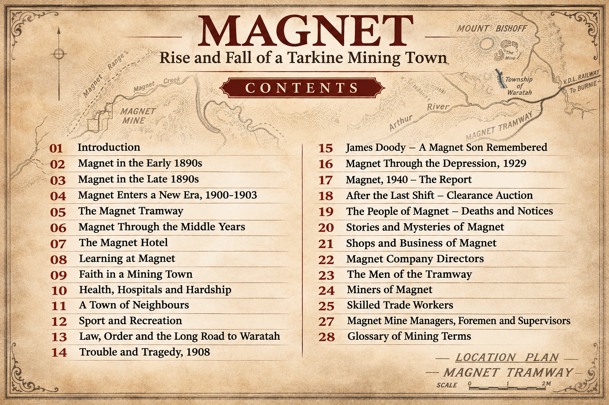

The book in preparation
Inside the book.
Magnet: Rise and Fall of a Tarkine Mining Town follows the community through its mining years, the people who built it, and the stories that remain. This working contents guide offers a glimpse of the themes the book will explore.

Contents and chapter titles may be refined as the research and writing continue.